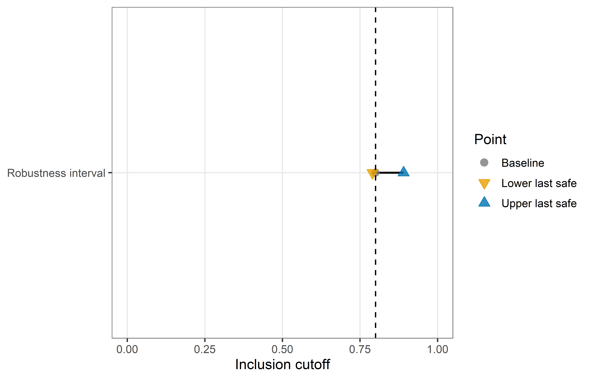
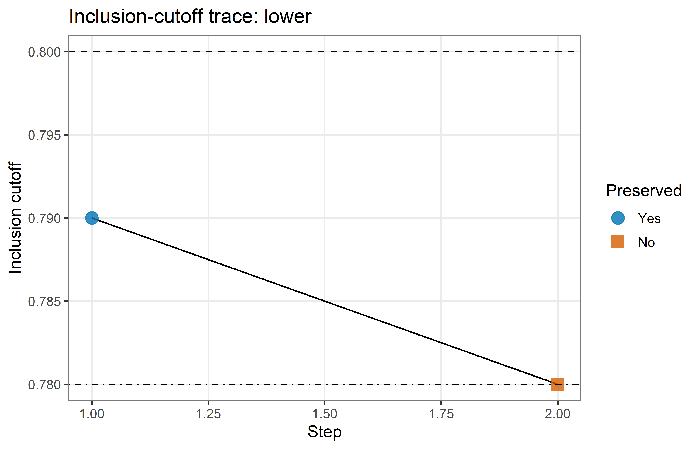

vdem_incl_con <- incl.test(
data = vdem_calib,
outcome = vdem_outcome,
conditions = vdem_conds,
incl.cut = vdem_incl_cut,
step = 0.01,
max_steps = 10,
n.cut = vdem_n_cut,
solution = "conservative",
complete = TRUE,
sort.by = c("incl", "n")
)7 Inclusion Cutoff
Truth-table outcome assignments depend on both a frequency requirement and a raw consistency one. As seen, the n.cut argument in QCA::truthTable() determines which configurations contain enough cases to be treated as empirically observed for minimization. And, among those configurations, incl.cut specifies the minimum consistency of sufficiency required for OUT = 1. If the analyst also supplies a pri.cut, the configuration must reach that PRI threshold as well. A configuration that satisfies the applicable consistency requirements enters minimization as sufficient for the outcome; conversely, an observed configuration that does not satisfy them receives OUT = 0, remaining empirically observed, but not treated as sufficient.
In our example, the reference truth table uses incl.cut = 0.8 and n.cut = 2. A configuration must therefore contain at least two cases to meet the frequency requirement; among the configurations that do, only those with a consistency of sufficiency of at least 0.8 are coded as sufficient for CIVSOC.
Changing incl.cut does not alter cases’ membership in their respective truth-table configurations. It changes only the consistency threshold used to assign outcome values to the configurations themselves. Lowering the cutoff can reassign a whole observed configuration from OUT = 0 to OUT = 1, whereas raising it can reassign a previously sufficient configuration from OUT = 1 to OUT = 0. Either reassignment changes which empirical configurations are treated as sufficient during logical minimization and may therefore alter the selected solution formula.
incl.test() examines this sensitivity by moving the inclusion cutoff downward and upward from a reference value. It creates an independent lower and upper path for every monitored solution type and, throughout those paths, the calibrated memberships, cases, frequency cutoff, and other supplied analytical settings remain fixed. The diagnostic therefore shows how far the inclusion cutoff can move in either direction while preserving each selected baseline solution formula.
7.1 How incl.test() works
By now, you are probably familiar with the drill. data supplies the outcome and condition memberships, outcome names the outcome set, and conditions identifies the condition sets used in every reconstructed truth table. Although conditions defaults to NULL and can therefore be left to QCA::truthTable(), supplying the condition names explicitly keeps the diagnostic tied to the intended condition set.
The cutoff-search arguments define the reference value, the resolution of the grid, and the length of each directional path. incl.cut is the reference cutoff against which every perturbed solution formula is compared. It defaults to 1 and accepts values from 0 to 1. step controls the distance between tested cutoffs and defaults to 0.01; it is subtracted along the lower path and added along the upper path. A smaller increment examines the cutoff scale more finely, but more movements may then be needed to cover the same distance from the reference value.
max_steps must be a positive integer, defaults to 20, and sets the maximum number of movements attempted separately in each direction. The frequency cutoff specified through n.cut must also be a positive integer and defaults to 1, but this cutoff remains fixed across all reconstructed truth tables.
Before beginning the search, incl.test() constructs the baseline truth table and obtains the selected baseline solution formula. At every admissible cutoff on the lower and upper paths, the function reconstructs the truth table, applies the selected exclusion rule when parsimonious or intermediate minimization requires it, repeats the minimization, and compares the newly selected formula with its baseline counterpart.
Once a valid baseline formula has been obtained, each directional path stops at the first applicable event:
- the selected solution formula changes;
- the requested model position or intermediate branch no longer yields a comparable selected formula;
- truth-table construction, exclusion, or minimization fails;
- the next proposed cutoff would fall outside the admissible interval from
0to1; or - the path uses all movements permitted by
max_steps.
If the baseline truth table, minimization, model position, or intermediate branch does not yield a valid reference formula, the diagnostic records that baseline problem rather than beginning the lower and upper searches.
When reading the result, first_failing records the tested cutoff at which a formula change, selection failure, or computational failure occurs. If the next movement would leave the admissible interval from 0 to 1, the function stops before testing that out-of-range cutoff and leaves first_failing missing. The reason column then records search_boundary_lower or search_boundary_upper, depending on the direction of the path. An exhausted search budget also leaves first_failing missing, but is identified separately by search_budget_exhausted.
The solution-type, model-position, intermediate-branch, exclusion, result-layout, and progress controls retain the conventions established in the preceding chapters. Their inclusion-cutoff-specific consequence is that the same comparison and minimization rules are applied at every tested cutoff. Additional truth-table and minimization arguments supplied through ... are likewise held constant across the reconstructed analyses. In the reference application, this allows complete and sort.by to govern every truth table in the same way.
As in the calibration diagnostic, incl.test() returns an object that supports three ordinary forms of inspection. Printing the incl_test object reports the principal settings and formula-preservation boundaries. as.data.frame() returns the complete boundary table, while plot() presents the same evidence as an interval or as the ordered trace of one directional path.
7.2 A Narrow First Diagnostic
To understand the function, let’s first check only the conservative solution. The diagnostic begins at our reference cutoff of 0.8, holds the frequency cutoff at 2, and uses increments of 0.01. With ten movements available in each direction, the planned grid could extend from 0.70 to 0.90 if neither path encountered an earlier stopping event. Because conservative minimization does not admit logical remainders as simplifying assumptions, neither directional expectations nor an exclusion rule is needed for this first diagnostic.
7.3 Reading the Boundary Table
vdem_incl_con
#> <incl_test>
#> Outcome test: incl.cut robustness
#> Solution: conservative
#> Monitored solutions: conservative
#> which_M: 1
#> Starting incl.cut: 0.8
#> Step size: 0.01
#> Max steps: 10
#>
#> Result
#> direction start last_safe first_failing steps total_delta reason
#> lower 0.8 0.77 0.76 3 -0.03 CON:formula_changed
#> upper 0.8 0.89 0.90 9 0.09 CON:formula_changed
#>
#> Summary
#> Stable interval: [0.77, 0.89]
#> Total width: 0.12Printing vdem_incl_con first identifies the object as an incl_test diagnostic monitoring the conservative solution. The following two records represent the lower and upper cutoff paths beginning at 0.8. They keep the boundary grammar introduced in the calibration chapter: last_safe is the furthest tested cutoff that preserves the conservative formula, while first_failing is the tested cutoff at which the path encounters the formula change, selection failure, or computational failure that stops it. Here, steps, total_delta, and reason show how each cutoff path reached that boundary.
In the lower direction, the cutoffs 0.79, 0.78, and 0.77 all preserve the baseline conservative formula. The lower path therefore reports steps = 3 and last_safe = 0.77. The next tested cutoff, 0.76, changes the outcome assignment of the six-case truth-table configuration in which FREEXP and GENCL are present while PARTY and JUCON are absent. Its consistency of sufficiency is approximately 0.764, which falls below cutoffs of 0.77 or higher but reaches the newly tested cutoff of 0.76. The configuration is thus reassigned from OUT = 0 to OUT = 1.
subset(
vdem_tt$tt,
FREEXP == 1 & PARTY == 0 & GENCL == 1 & JUCON == 0
)
#> FREEXP PARTY GENCL JUCON OUT n incl PRI cases
#> 11 1 0 1 0 0 6 0.763868402990055 0.542457565776731 Angola,Cameroon,Chad,Kyrgyzstan,Madagascar,TogoThat reassignment completes the four empirically sufficient combinations of presence and absence for PARTY and JUCON among configurations in which FREEXP and GENCL are present. Logical minimization can then remove both PARTY and JUCON, replacing the baseline formula FREEXP*PARTY*GENCL + FREEXP*GENCL*JUCON with the single prime implicant FREEXP*GENCL. For this reason, 0.76 is the first formula-changing cutoff and appears in first_failing with the compact reason CON:formula_changed.
In the upper direction, nine movements preserve the conservative formula through 0.89. At 0.90, the twelve-case configuration in which FREEXP, GENCL, and JUCON are present and PARTY is absent no longer reaches the inclusion cutoff. Its consistency of sufficiency is approximately 0.896: enough for OUT = 1 at 0.89, but not at 0.90. Once this configuration is reassigned from OUT = 1 to OUT = 0, the two sufficient configurations that previously differed only in the presence or absence of PARTY are no longer both included among the OUT = 1 configurations submitted to minimization. PARTY can therefore no longer be removed to obtain FREEXP*GENCL*JUCON, and conservative minimization retains only FREEXP*PARTY*GENCL.
subset(
vdem_tt$tt,
FREEXP == 1 & PARTY == 0 & GENCL == 1 & JUCON == 1
)
#> FREEXP PARTY GENCL JUCON OUT n incl PRI cases
#> 12 1 0 1 1 1 12 0.895796587254172 0.849800168844696 Mali,Philippines,Uganda,Mozambique,Ivory Coast,Liberia,Malawi,Papua New Guinea,Tunisia,Sao Tome and Principe,Solomon Islands,VanuatuThe summary combines the two last_safe values into the observed formula-preservation interval [0.77, 0.89], whose width is 0.12. The formula-changing cutoffs of 0.76 and 0.90 lie immediately outside that interval. Since the diagnostic tests increments of 0.01, values between each last-safe cutoff and the adjacent formula-changing cutoff are not analyzed.
Unlike a calibration diagnostic, moving incl.cut does not change the cases’ calibrated memberships in the condition or outcome sets, so membership in each prime implicant and in their union also remains unchanged as long as minimization returns the same formula. Formula preservation therefore entails preservation of prime-implicant consistency, PRI, raw coverage, and unique coverage, as well as solution consistency, solution PRI, and solution coverage.
The boundary table establishes where each path stopped, while the two printed truth-table configurations show the case counts and consistency scores that produce the formula changes at 0.76 and 0.90. If a path stops unexpectedly, the incl_test object also retains the detailed stopping, baseline, and stepwise evidence needed to investigate it.
7.4 Expanding Across Solution Types
Now that we’re done with the baby steps, we can extend the same diagnostic across solution types. The next call monitors the conservative, parsimonious, and intermediate formulas independently. It uses the reference directional expectations and, for didactic purposes, selects the C1P1 intermediate branch and model position 1, even though the reference analysis produces neither multiple branches nor multiple models. The inclusion-cutoff search still begins at 0.8 and proceeds in increments of 0.01, while the larger budget of fifty movements allows each path to continue farther before exhausting the search budget. The admissible interval from 0 to 1, evidently, constrains the proposed cutoffs.
For parsimonious and intermediate minimization, the call reapplies the exclude_mode = "recompute" rule for contradictory simplifying assumptions to every reconstructed truth table.
Moving
incl.cutcan change outcome assignments in the truth table for eitherCIVSOCor~CIVSOCand, in turn, alter which logical remaindersQCA::findRows()identifies as contradictory simplifying assumptions.
The results use the previously introduced long layout, giving each solution type and search direction its own record.
vdem_incl_all <- incl.test(
data = vdem_calib,
outcome = vdem_outcome,
conditions = vdem_conds,
incl.cut = vdem_incl_cut,
step = 0.01,
max_steps = 50,
n.cut = vdem_n_cut,
solution = "all",
dir.exp = vdem_dir_exp,
exclude_mode = "recompute",
exclude_recompute = list(type = 2),
which_M = 1,
i_mode = "C1P1",
result_shape = "long",
complete = TRUE,
sort.by = c("incl", "n")
)vdem_incl_all
#> <incl_test>
#> Outcome test: incl.cut robustness
#> Solution: all
#> Monitored solutions: conservative, parsimonious, intermediate
#> which_M: 1
#> i_mode: C1P1
#> Starting incl.cut: 0.8
#> Step size: 0.01
#> Max steps: 50
#>
#> Result
#> solution_type direction start last_safe first_failing steps total_delta reason
#> conservative lower 0.8 0.77 0.76 3 -0.03 CON:formula_changed
#> conservative upper 0.8 0.89 0.90 9 0.09 CON:formula_changed
#> parsimonious lower 0.8 0.79 0.78 1 -0.01 PAR:formula_changed
#> parsimonious upper 0.8 0.89 0.90 9 0.09 PAR:formula_changed
#> intermediate lower 0.8 0.77 0.76 3 -0.03 INT:formula_changed
#> intermediate upper 0.8 0.89 0.90 9 0.09 INT:formula_changed
#>
#> Summary
#>
#> Stable intervals
#> solution_type lower upper width
#> CON 0.77 0.89 0.12
#> PAR 0.79 0.89 0.10
#> INT 0.77 0.89 0.12The upper path produces the same boundary for all three solution types. Each baseline formula is preserved through 0.89 and changes at 0.90. At that cutoff, the conservative and intermediate solutions both become FREEXP*PARTY*GENCL, while the parsimonious solution becomes FREEXP*PARTY.
The lower path distinguishes the parsimonious solution from the other two. The conservative and intermediate formulas are preserved through 0.77 and change at 0.76, when both reduce to the single prime implicant FREEXP*GENCL. The parsimonious formula FREEXP*PARTY + FREEXP*JUCON is preserved through 0.79 but changes at 0.78 to FREEXP*PARTY*GENCL + FREEXP*GENCL*JUCON.1
The observed formula-preservation intervals are therefore [0.77, 0.89] for the conservative and intermediate solutions and [0.79, 0.89] for the parsimonious solution. The three solution types share the same upper boundary, but the parsimonious formula has a narrower preservation interval because it changes after a smaller downward movement from the reference cutoff.
7.5 Plotting the Boundary
The plot() method for an incl_test object returns a ggplot without reconstructing the truth table or repeating the minimization. Its default type = "interval" displays the reference cutoff together with the lower and upper last_safe cutoffs. The alternative type = "trace" displays the sequence of tested cutoffs for one lower or upper path.
When the diagnostic contains more than one monitored solution type, solution_type must select the conservative, parsimonious, or intermediate paths to be plotted. Each plot presents one solution type at a time. Also, the intermediate-branch selection rule was already fixed when vdem_incl_all was created, so the ordinary plotting workflow does not require another branch selection.
The interval plot uses the lower and upper last_safe values to display the observed formula-preservation interval, while a vertical reference line marks the baseline cutoff. It does not display the first formula-changing cutoffs or explain the mechanisms that produced them, so those values and explanations must still be read from the boundary table and the corresponding truth tables.
The following call selects the parsimonious boundary from the three-solution object:
plot(
vdem_incl_all,
solution_type = "parsimonious",
type = "interval"
)
With the interval plot we can observe the parsimonious lower last_safe cutoff of 0.79, the reference cutoff of 0.8, and the upper last_safe cutoff of 0.89 on a common axis. The segment therefore represents the cutoffs on the tested grid that bound the observed parsimonious formula-preservation interval. The table remains necessary for identifying the first formula-changing cutoffs of 0.78 and 0.90 and for determining why the formula changes at those values.
A trace plot follows one lower or upper path and therefore requires a single selection through direction. The stored trace contains the cutoffs that were submitted to the QCA workflow after the baseline. A preserved point means that the selected solution formula remained identical to its baseline counterpart, while a changed point marks a tested cutoff that produced a different formula. When truth-table construction, exclusion, or minimization fails, preservation is recorded as unknown because no valid formula comparison is available.
If the next proposed cutoff would fall outside the admissible interval from 0 to 1, the trace ends at the last tested cutoff. It does not add the out-of-range proposal as a point or a reference line because no truth table or minimization was produced for that value. The boundary table instead leaves first_failing missing and identifies the stopping event in reason.
plot(
vdem_incl_all,
solution_type = "parsimonious",
type = "trace",
direction = "lower"
)
For the parsimonious lower path, the diagnostic trace contains one formula-preserving movement to 0.79, followed by the formula change at 0.78. It presents the same lower boundary as an ordered sequence of tested cutoffs rather than only as an endpoint in the boundary table.
Had the path ended because the search budget was exhausted, every completed movement in the trace would have preserved the baseline formula, but no formula-changing boundary would have been located within that budget. The absence of a changed point would then indicate an unresolved boundary beyond the explored path, not unrestricted formula preservation.
The intervals reported here describe formula preservation under one-at-a-time changes to the inclusion cutoff along the tested grid and therefore remain conditional on the calibrated memberships, cases, frequency cutoff, solution selection, and treatment of logical remainders held fixed along each path.
More substantially, the next chapter relaxes this structure by moving beyond a single truth-table cutoff to examine sampled specifications in which calibration anchors, the inclusion cutoff, and the frequency cutoff may change together.
The parsimonious change at
0.78results from the exclusion rule being recomputed at every tested cutoff. Every empirical configuration in the truth table forCIVSOCretains the sameOUTassignment from0.80through0.78, so parsimonious minimization of that truth table, without the recomputed exclusions, would continue to produce the baseline formula. Withtype = 2, however,QCA::findRows()also reconstructs the truth table for~CIVSOCand compares the logical remainders used as simplifying assumptions in parsimonious minimization for the outcome and its negation. At0.78, configuration9,FREEXP*~PARTY*~GENCL*~JUCON, changes fromOUT = 0toOUT = 1for~CIVSOCbecause its consistency of sufficiency, approximately0.789, reaches the new cutoff. The parsimonious solution for~CIVSOCconsequently changes from~FREEXP, which uses logical remainders2,6, and8, to~FREEXP + ~GENCL, which also uses remainders10,13, and14. Because remainders10,13, and14are already simplifying assumptions in the parsimonious solution forCIVSOC,QCA::findRows()identifies them as contradictory simplifying assumptions. qcaERT excludes them from the new minimization forCIVSOC, preventingGENCLfrom being eliminated and producing the more detailed formula reported in the main text.↩︎